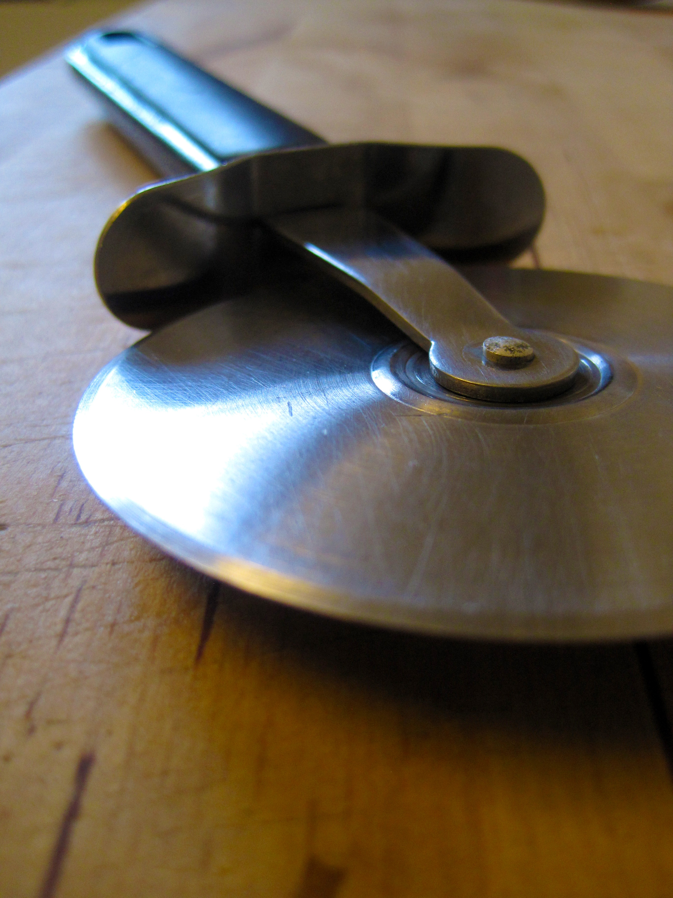

Here we see the pizza in all its glory. Of all the culinary fruits that mankind has bore, this remains the most popular and well sought out. Originating from italy, it has made its way across the world inspiring many creations and continuous expressions of the culinary art.

Rumored to have sliced the gods themselves, this piece of circular metal has proven to be worthy against the collision of dough. Its sole abilities are to slay pizza and get pussy.
In order to make this exquisite and unique pizza, we must take a few of the many dicoveries that mankind has came across throughout the eons. we need dough, cheese, marinara/tomato sauce, and many toppings. cook for a while. that is all.